This article retains its original experiments and examples. For current package usage, see the usage guide.
Elastic Embedding (PDF) is a method like SNE, but doesn’t use normalization of weights into probabilities. I have looked at its behavior elsewhere. In this discussion, I would like to consider an obvious extension: EE uses Gaussian output weights, like ASNE and SSNE, which we know don’t work as well in the normalized case compared to using the t-distribution with one degree of freedom, as used in t-SNE. Can EE also be improved by using the t-distribution as an output weight function? I was unable to find any example of anyone trying this, which was slightly surprising to me. If someone has tried this, it’s at least not a very popular or well-known technique.
Theory
Cost function
The generic elastic embedding cost function is:
C_{EE} = -\sum_{ij}^{N} v_{ij}^{+} \log w_{ij} + \lambda \sum_{ij}^{N} v_{ij}^{-} w_{ij}
where N is the number of observations in the dataset, i and j are indexes to observations in the dataset, v_{ij}^{+} is the input weight (similarity) between i and j associated with the attractive part of the cost function, v_{ij}^{-} are input weights associated with the repulsive part of the cost function, w_{ij} are the output weights and \lambda is a positive scalar that weights the repulsive versus attractive interactions in the cost function.
For more details, see the introduction to the discussion of elastic embedding, but the attractive input weights are the output weights are Gaussian-based, as in ASNE and SSNE.
Here, I propose a simplified cost function for t-distributed Elastic Embedding (t-EE)
C_{t-EE} = -\frac{1}{N}\sum_{ij}^{N} v_{ij} \log w_{ij} + \frac{\lambda}{N} \sum_{ij}^{N} w_{ij}
The t-EE cost function differs from EE by:
only having one set of input weights, v_{ij}, which are equivalent to the unnormalized versions of the probabilities p_{ij} used in SSNE and t-SNE and determined by the same procedure of perplexity calibration, followed by row-normalization and symmetrization.
w_{ij} are the t-distributed output weights (same as in t-SNE).
Both parts of the cost function are weighted by 1 / N, the reason for which we will see below.
EE as the Weighted I-Divergence
It would be nice if the cost function was zero when the output weights perfectly reproduce the input weights, as with the Kullback-Leibler divergence used by t-SNE. As long as we don’t add any terms involving w_{ij}, we can make this happen without affecting the EE gradient. We would like C_{t-EE} = 0 when v_{ij} = w_{ij}. Let’s add an extra constant, C_{v}, that only involves v_{ij} (and maybe \lambda), and we can write:
C_{t-EE} = -\frac{1}{N}\sum_{ij}^{N} v_{ij} \log v_{ij} + \frac{\lambda}{N} \sum_{ij}^{N} v_{ij} + C_{v} = 0 and then, knowing that \sum_{ij}^{N} v_{ij} = N, we have:
C_{v} = \frac{1}{N}\sum_{ij}^{N} v_{ij} \log v_{ij} - \lambda
so the cost function can be written as:
C_{t-EE} = \frac{1}{N}\sum_{ij}^{N} v_{ij} \log v_{ij} -\frac{1}{N}\sum_{ij}^{N} v_{ij} \log w_{ij} + \frac{\lambda}{N} \sum_{ij}^{N} w_{ij} - \lambda The first two terms can be combined to give a Kullback-Leibler-like expression, and we can group the \lambda expressions too (and I have also rewritten N as \sum_{ij}^{N} v_{ij})
C_{t-EE} = \frac{1}{N} \left[ \sum_{ij}^{N} v_{ij} \log \frac{v_{ij}}{w_{ij}} + \lambda \left(\sum_{ij}^{N} w_{ij} - \sum_{ij}^{N} v_{ij}\right) \right]
This expression is basically the same as the I-divergence (also called the generalized Kullback-Leibler divergence), used in non-negative matrix factorization, but with a weighting term introduced by \lambda. The introduction of \lambda does allow the cost to get negative, but empirically, I’ve noticed that a negative cost indicates that \lambda has been set too small: visually the output shows over-compressed clusters compared to a t-SNE result. So this version of the cost function may be superior for helping to at least set a lower bound on \lambda.
Gradient
Whichever version of the cost function you prefer the gradient of t-EE with respect to the output coordinate of point i, \mathbf{y_i}, is:
\frac{\partial C_{t-EE}}{\partial \mathbf{y_i}} = \frac{4}{N} \sum_{j}^N \left(v_{ij} - \lambda w_{ij} \right) w_{ij} \left(\mathbf{y_i - y_j}\right)
If we were to define \lambda at each iteration as N / Z where Z =\sum_{ij}^{N} w_{ij}, and then set p_{ij} = v_{ij} / N and q_{ij} = w_{ij} / Z, we would get back the t-SNE gradient. For elastic embedding, we fix \lambda as constant. The connection between the t-EE and the t-SNE gradient is the reason for making the weighting factor in the cost function \lambda / N.
Datasets
See the Datasets page. We shall be using these datasets not just to benchmark the results of t-EE, but also to think about how t-SNE weight distributions change over time.
Choosing lambda
Like EE, t-EE requires choosing the value of an extra parameter,
\lambda, specified as
lambda in the smallvis interface. This is
certainly an irksome requirement. At least with the way t-EE is
formulated we can think about \lambda
as an approximation to N/Z in t-SNE,
i.e. the ratio of the size of the dataset to the sum of the output
weights. Because the output weights range from 0 to 1, we can try to get
a handle on the sort of range \lambda
will have.
If using the random initialization, at the start of t-SNE optimization, all output distances are small, which means all the weights are large and close to 1. As there are N observations, there are N^2 elements in \mathbf{W} so Z \approx N^2. Technically, it’s actually more like N^2 - N because self-weights are always set to 0, but as N grows the difference becomes less important. So we shall say that at the start of a t-SNE optimization, \lambda = N / Z \approx N / N^2 = 1 / N.
If the t-SNE optimization did a perfect job and the error was reduced to zero, the sum of the input and output weights would be the same and Z = N, which would mean that \lambda = 1. Over the course of t-SNE optimization, then, we would expect \lambda to start very small and increase, approaching 1 as the error got close to 0.
So we can at least expect \lambda to very roughly take values between 0 and 1. How good are these bounds in reality? Well, they’re ok. I have looked at how N/Z evolves in t-SNE and N / Z = 1 / N is a very good approximation even if you are initializing from Laplacian Eigenmaps or scaled PCA. The value quickly rise, but eventually levels off.
And of course, we never see an error of zero with t-SNE, so the final value of N / Z is not 1. For most datasets and perplexities, it’s substantially smaller than 1. The exact value depends on N and the perplexity, with N / Z showing an inverse relationship to both: large N and large perplexity results in a lower final value of N / Z. For low perplexities (e.g. 5), N / Z can actually end up being larger than 1, although I’ve not seen it larger than around 5, although this might be because low perplexity requires more iterations for convergence to occur, and I might just not have been patient.
Evolution of N/Z with iteration
Here’s a little extra detail on how N/Z changes during a t-SNE optimization.
Swiss Roll
A synthetic dataset like the Swiss Roll let’s use look at the effect of dataset size in a controlled way. We’ll look at N = 1000 and N = 3000 and several perplexity values. Some relevant parameters used are:
scale = FALSE, Y_init = "lap", eta = 100, max_iter = 5000, epoch = 100, tol = 0First, here are some lots for N/Z
evolves with iteration and different values of perplexity for
sr1k on the left and sr3k on the right. Black
line is perplexity = 10, red is perplexity = 20, orange is perplexity =
30, blue is perplexity = 40 and purple is perplexity = 50.
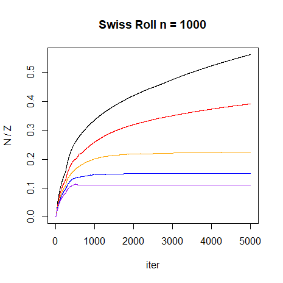 |
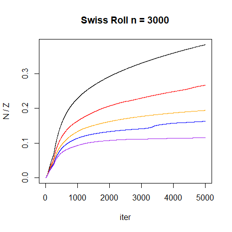 |
As perplexity increases, the final value of N/Z decreases.
Next, some plots of how N/Z evolves
for perplexity 10 and perplexity 50 with different N. Black is for
sr1k, red is sr2k, blue is
sr3k.
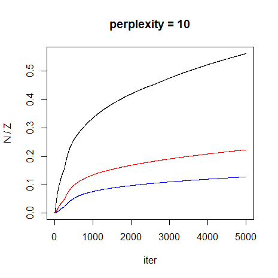 |
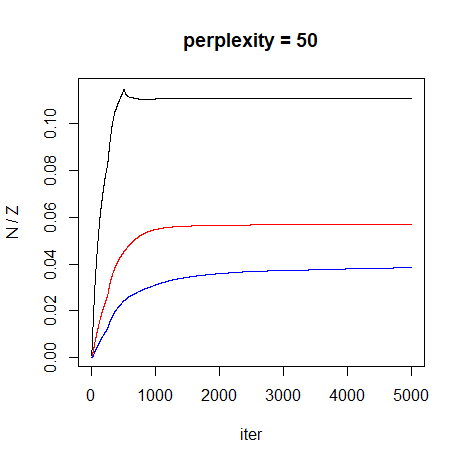 |
This plot shows that as N increases, the final value of N/Z decreases.
Real Datasets
Here are some plots of how 1/Z evolves with iteration for each dataset. For each dataset, the Laplacian Eigenmap initialization is shown in black, scaled PCA is shown in red, random initialization is shown in blue and random initialization with early exaggeration is in cyan.
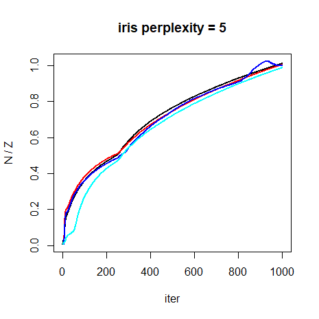 |
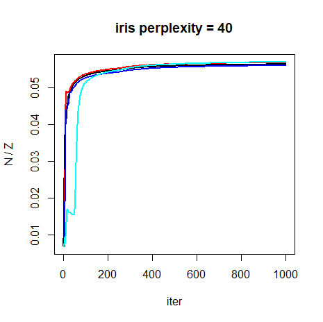 |
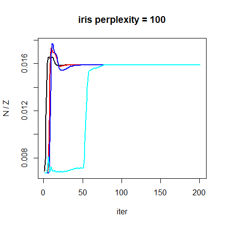 |
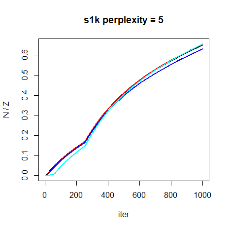 |
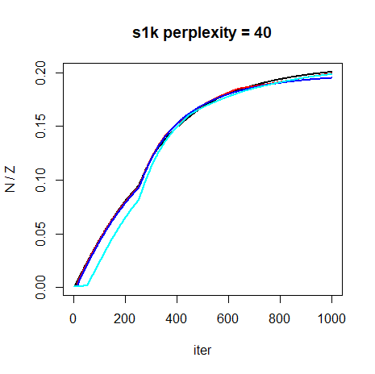 |
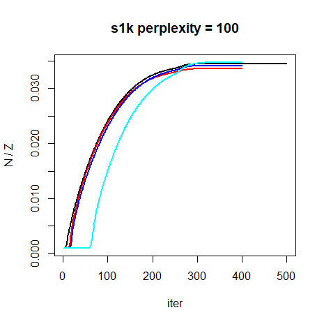 |
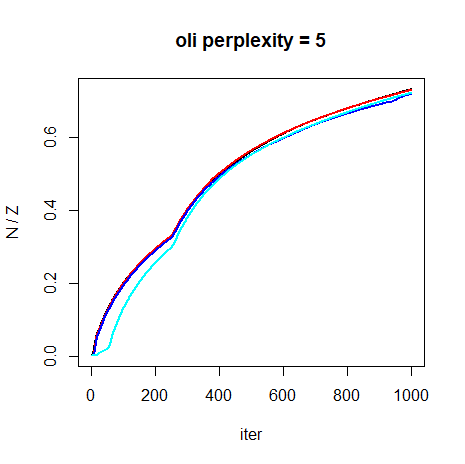 |
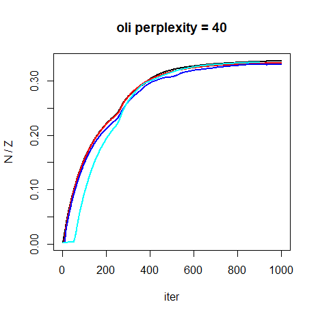 |
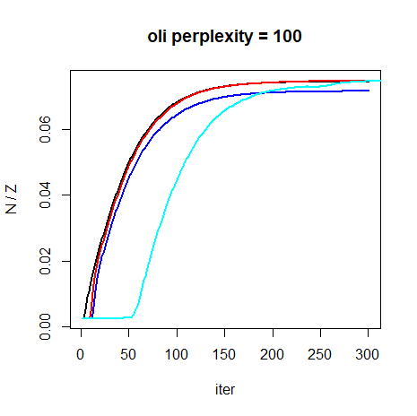 |
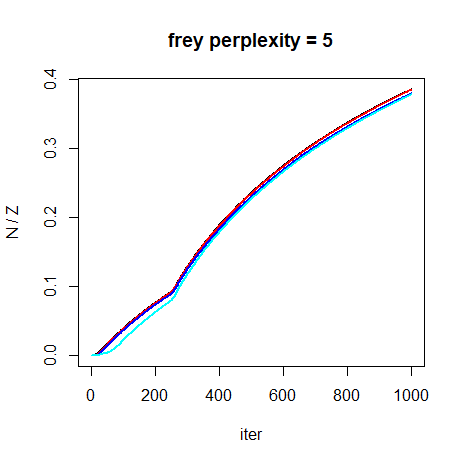 |
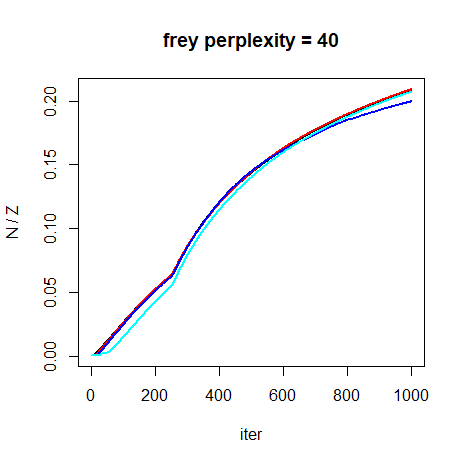 |
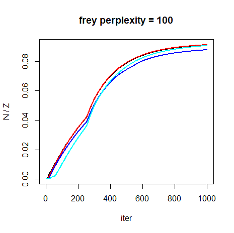 |
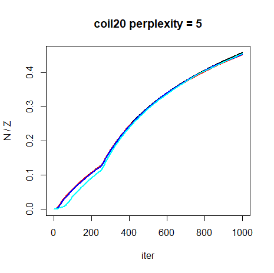 |
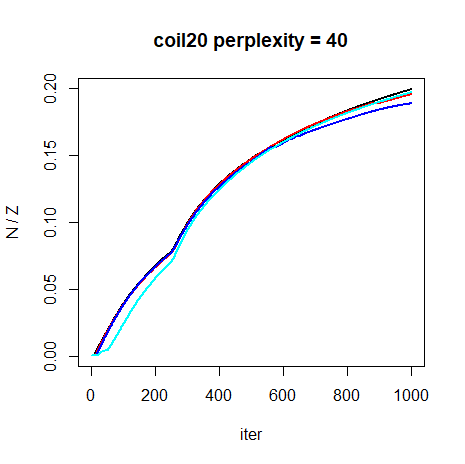 |
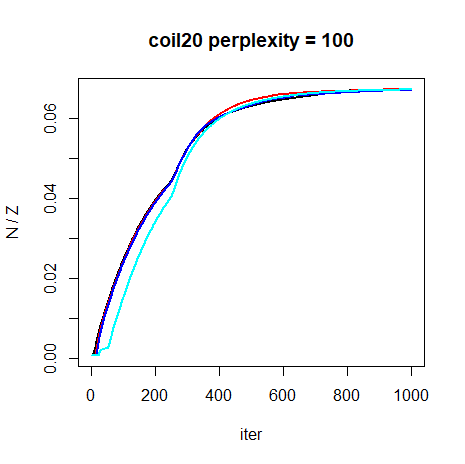 |
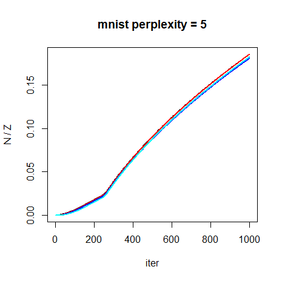 |
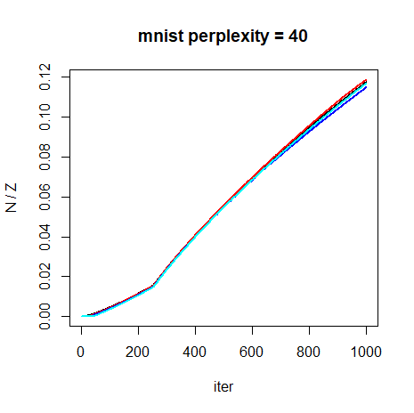 |
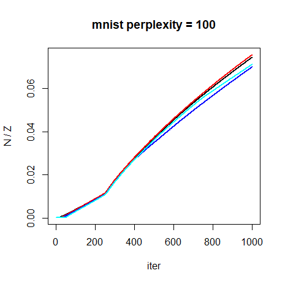 |
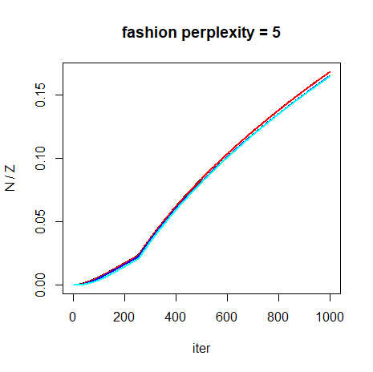 |
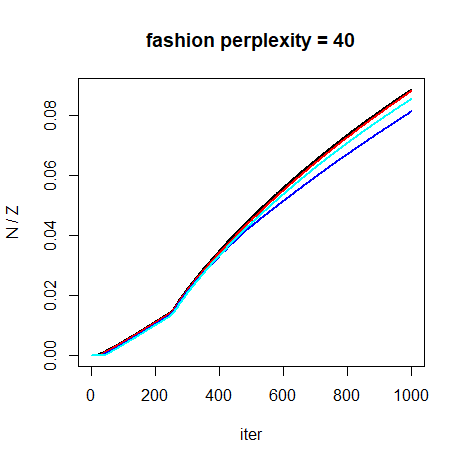 |
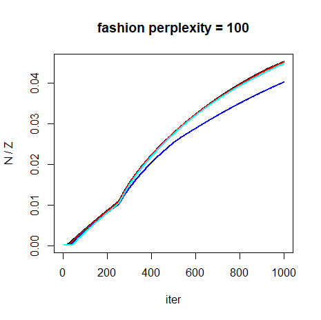 |
Results seem to not depend on initialization very much. The most
obvious difference occurs with iris at perplexity = 100,
but the final value of N/Z is still the
same. In general, a steady increase in N/Z is observed with an elbow in every plot
when during the transition of low to high momentum at
mom_switch_iter = 250.
As with the Swiss Roll results, higher perplexities lead to lower
values of N/Z, and datasets with larger
N tend to end up with lower values of
N/Z. iris bucks this trend
however.
With the standard settings (e.g. perplexity = 40 and
max_iter = 1000), here is a summary of the N / Z values starting from scaled PCA
results:
| dataset | N | N / Z |
|---|---|---|
| iris | 150 | 0.057 |
| s1k | 1000 | 0.20 |
| oli | 400 | 0.33 |
| frey | 1965 | 0.21 |
| coil20 | 1440 | 0.20 |
| mnist | 6000 | 0.12 |
| fashion | 6000 | 0.088 |
For typical t-SNE settings, we see that N/Z attains values between 0.057 to 0.33.
Ignoring iris for a moment, the smallest dataset,
oli, has the largest N/Z =
0.33, while mnist6k and fashion6k have
N/Z = 0.12 and N/Z
= 0.09, respectively. Intermediate-sized datasets
s1k, frey and coil20 with N between 1000 and 2000, have intermediate
values of N/Z at around 0.2.
Unfortunately, iris messes this all up, having the smallest
N/Z value despite being the smallest
dataset.
Converged Results
4 May 2020 From the plots above, it’s clear that N/Z values haven’t leveled off by 1000
iterations for larger datasets like mnist6k and
fashion6k, and no dataset has converged for the
perplexity = 5 results. I ran some very long runs with
max_iter = 100000, eta = 100,
epoch = 100, exaggeration_factor = 4,
Y_init = "spca" with perplexity = 40 and
perplexity = 100 to ensure that the final results were
converged with the expectation that this would be way more than enough
iterations. For perplexity = 5, even 100,000 iterations
isn’t enough to fully converge the results: the layout doesn’t really
change, it just slowly expands with the cost slowly ticking down every
few thousand iterations. I assume that this is caused by the low
perplexity failing to capture any longer-range connected structure, so
you can always decrease the cost by pushing all the mini clusters away
from each other forever, so that non-neighbors get less and less
probability assigned to them.
As an alternative, for a low perplexity case I used
perplexity = 15 and only max_iter = 10000.
This still shows similar issues as perplexity = 5, and
doesn’t converge with tol = 1e-7, but runs in a more
reasonable time-frame.
| dataset | N | N / Z (15) | N / Z (40) | N / Z (100) |
|---|---|---|---|---|
| iris | 150 | 2.40 | 0.057 | 0.016 |
| s1k | 1000 | 2.14 | 0.20 | 0.035 |
| oli | 400 | 1.69 | 0.33 | 0.075 |
| frey | 1965 | 0.89 | 0.32 | 0.094 |
| coil20 | 1440 | 1.08 | 0.31 | 0.067 |
| mnist6k | 6000 | 0.68 | 0.60 | 0.19 |
| fashion6k | 6000 | 0.63 | 0.29 | 0.065 |
Compared to the table above, frey and
coil20 were slightly under-converged, but
mnist6k and fashion6k change a lot and clearly
had a lot more expansion to do. Interestingly, mnist6k and
fashion6k have quite similar values of N/Z at low perplexity, but show very
different behavior at higher perplexity. While clearly N/Z descreases with increased perplexity for
all datasets, the exact behavior seems to be very dataset dependent. For
the t-EE plots below we’ll show results for multiple \lambda values, with the results here used to
establish a sensible set of trial values.
Settings
I was able to use the standard delta-bar-delta settings with t-EE,
without having to reduce eta, the learning rate. Therefore
we will use the same settings, I tend to use for t-SNE, based off those
used in the original t-SNE
paper, except with scaled PCA initialization rather than random
initialization and without early exaggeration. As well as looking at
perplexity = 40, we’ll also repeat results using
perplexity = 5 and perplexity = 100 to look at
how t-EE performs across a practical range of perplexity values.
Example command for embedding iris with perplexity =
5:
iris_tee_p5 <- smallvis(
iris,
scale = "absmax",
perplexity = 5,
Y_init = "spca",
eta = 100,
method = list("tee", lambda = 0.05),
min_cost = -Inf
)Note that because the cost is not bounded by zero, you must set the
min_cost parameter. It’s most convenient to set it to
-Inf.
Values for lambda will be varied between
0.001 and 0.5. On the plots below, both
lambda and the t-EE error (I-divergence style) will be
shown. t-SNE results (with the corresponding KL divergence) with the
same perplexity and other settings are also shown for comparison.
Conclusions
lambda obviously has a big effect on the result of t-EE.
Too high a value and repulsion between points dominates, with large
over-expanded clusters. Low lambda values have the opposite
effect. For most datasets and perplexities, there seems to be a
lambda value such that t-EE can produce output that looks a
lot like t-SNE. For those cases, rescoring the t-EE results with the
t-SNE cost function shows that they are within a few percent (around 5%)
of the t-SNE cost.
mnist, and to a lesser extent, fashion,
seem like exceptions. None of the lambda values produce
results that are that close to t-SNE, although results at low values of
lambda get a similar arrangement of clusters, but less
spread out. These visualizations might in fact be preferable to the
t-SNE versions. And in terms of mean neighbor preservation (results not
shown), the best t-EE results are comparable (within 0.02 units).
For perplexity 100, the iris results also don’t show a
layout that is very close to the t-SNE results. It is possible to get a
much better t-EE result, by using lambda = 0.015. But the
range of acceptable lambda values is quite small. Below is
the lambda = 0.015 on the left, and next to it the result
from setting lambda = 0.02. The increase in
lambda by 0.005 units has a noticeable effect:
Although in this case a finer-grained search of lambda
found results that looks close to the t-SNE results, I was unable to
find such a value for mnist. The best t-EE result, when
rescored with the t-SNE cost function was still around 20% higher than
the equivalent t-SNE layout. This doesn’t seem to be entirely a size
effect, because the equivalent fashion dataset error is
only 9%.
In terms of optimizing the neighbor preservation, the optimal
lambda varies with perplexity and dataset, but does show a
similar inverse relationship with perplexity as seen with the final
value of N/Z does in t-SNE. An optimal
value of lambda is around 0.1 at perplexity 5, 0.01 at
perplexity 40, and around 0.05 at perplexity 100. Whether the weighted
I-divergence is negative or positive is unfortunately not a very good
indicator of whether lambda has been chosen correctly.
Finally, the N/Z t-SNE plots suggest that, if there was a way to estimate Z, you could create a version of t-EE that behaved like t-SNE, but which would be amenable to stochastic gradient optimization. This would let it scale to larger data sets better than Barnes-Hut t-SNE, and more like UMAP or LargeVis.
Unfortunately estimating Z doesn’t seem straightforward. Alternatives like increasing \lambda from 1 / N to some final value over the course of the optimization might work better in practice, but as the final value would be dataset and perplexity dependent, some efficient way of monitoring of the current state of the solution is needed. If there was a way to do this that could make use of the data already sampled by the approaches of UMAP and LargeVis, even an approximate version of t-SNE would be attractive.
As it is, t-EE in its current state could be made much faster by applying the same sampling and optimization used by LargeVis and UMAP, but requires a choice of \lambda, just like the functionally equivalent \gamma in LargeVis. As UMAP doesn’t even have such a free parameter and seems to perform as well as LargeVis, there’s probably not a great need for a stochastic gradient version of t-EE, given that it is so similar to LargeVis and provides no advantages over it or UMAP, unless a solid heuristic for choosing \lambda emerges.
Addendum: Homotopy Method
April 14 2020: Dmitry Kobak suggested to me that the
horrible results we see with large values of \lambda are due to the lack of early
exaggeration, and that we can simulate that by running the optimization
with a small value of \lambda
initially. To test this, I have run a series of t-EE optimizations,
starting at lambda = 0.001 with sPCA initialization, then
running at progressively higher values of lambda using the
final configuration of the previous run as the initial coordinates for
the new run. The values of lambda I used were
c(0.001, 0.005, 0.01, 0.05, 0.1, 0.5, 1) and I gave each
run 1000 iterations to try and remove any convergence issues.
May 1 2020: It turns out that 1000 iterations per value of
lambda isn’t enough, so I increased the total number of
iterations available over all 7 runs to 50,000. Most datasets don’t come
close to needing that number, except mnist6k and
fashion6k. This is definitely not a practical approach I
would recommend.
Results with up to 7,000 iterations are on the left. Results with the 50,000 iterations are on the right.
fashion6k
Both of these are much nicer looking, although the left-hand images,
which only allow for 7,000 iterations are clearly over-expanded in the
case of mnist6k and fashion6k, which means
they weren’t given long enough to optimize. The right hand images, which
use up to 50,000 iterations, show results that don’t look very different
from t-SNE (if anything, less expanded).
To prove that starting with a low value of lambda is
important, here are the mnist6k results starting from
lambda = 1 directly and using up to 7,000 iterations
(left-hand image) and 50,000 iterations (right-hand image, this one
converged after 38,100 iterations):
Still visually bad and with a higher final cost compared to the annealed-lambda results in both cases.
mnist6k as lambda increases
And to get a sense of how changing lambda affects the
visualization, here are some images of mnist6k at the end
of each optimization within the homotopy loop, for values of
lambda between 0.001 and 1, and then with
lambda = 5 (initialized from the results of
lambda = 1) to fill out the space (and to see if anything
interesting happens when the repulsion is up-weighted).
In terms of the overall shape of the layout, there’s not much happening once \lambda increases beyond about 0.01. What does happen is that the absolute size of the distances between points increases as can be seen by the ranges of the axes.
I initialized a t-SNE optimization from the
lambda = 0.05 result. It took a very long time to converge
(20,500 iterations) and looks exceptionally like the t-EE result with
lambda = 0.5. Its final value of N/Z = 0.61 means that it effectively got to
lambda = 0.6, so that’s not too surprising. It’s also very
close to the converged N/Z t-SNE result
starting from scaled PCA with early exaggeration.
Perhaps there are other, more interesting layouts that are available
with larger lambda using a different initialization scheme,
but for the results here, it looks like you can get more compressed,
more UMAP/LargeVis-like results with a smaller lambda.
Above a certain value, you are stuck with something very t-SNE-like.
I have looked at increasing lambda further to 10, 50 and
100. At this point, we start running into two problems: first, the
choice of eta = 100 which works for low values of
lambda is inappropriately small. eta = 10000
or even eta = 100000 becomes more useful. Having the
learning rate too low doesn’t just slow the optimization down, it also
prematurely converges because changes to the cost function become small
even though the data layout is changing so the typical
tol = 1e-7 which works for t-SNE needs to be lowered to
around 1e-9. The size of the gradient drops by an order of
magnitude even when the cost is reduced by around only 0.1%, so the
g2tol tolerance is more reliable here (somewhere in the
range of g2tol = 1e-7). This means that you need to be
careful about ensuring that layouts with high repulsion (compared to
t-SNE) are actually at a minimum.
If you do crank up the learning rate for these settings, the results
end up looking like the ones for lower values of lambda, so
there doesn’t seem to be anything to be gained from looking at large
values of lambda for t-EE.
Conclusion: Dmitry is correct. Early exaggeration-like settings seem to be important for getting good results in t-EE. It should be pointed out here that this is exactly the “homotopy method” that is advocated in the elastic embedding (PDF) paper, so I only have myself to blame for not following this established advice. I don’t know if the connection between early exaggeration in t-SNE and the homotopy method is established elsewhere.
As usual, un-normalized methods prove to be time-consuming to optimize using the initialization and optimization methods that work well for t-SNE. If a method has a way to balance attractive and repulsive interactions (as t-EE does), difficulty optimizing may be a sign that some re-balancing would help.